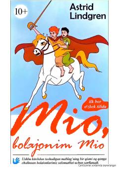

MBO'z otasini izlab Uzoq Mamlakatga tushib qolgan bolakayning sehrli va jasoratli sarguzashtlari.
Bu asar o'z ota-onasi tomonidan qadrlanmagan Bu Vilxelm Ulson ismli bolakayning mo'jizaviy tarzda Uzoq Mamlakatga tushib qolishi haqida hikoya qiladi. U yerda Mio ismini olgan qahramon o'z otasini topadi va yovuz Kato hukmronligiga qarshi kurashib, haqiqiy jasorat ko'rsatadi. Kitob mehr-muhabbat, do'stlik va ezgulikning yovuzlik ustidan g'alabasini tarannum etadi.